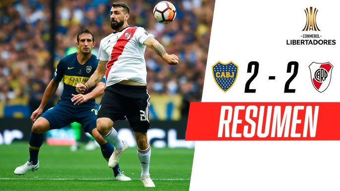
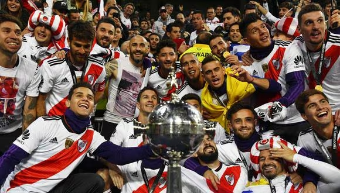

Boca Juniors abrió el marcador con un gol de Ramón Ábila al minuto 34. El delantero aprovechó un rebote y con un potente disparo superó al arquero de River. Sin embargo, River Plate respondió rápidamente, ya que apenas un minuto después, al 35, Lucas Pratto empató el partido con un remate preciso. Antes de finalizar el primer tiempo, Darío Benedetto marcó el 2-1 para Boca con un cabezazo tras un tiro libre. En la segunda mitad, al minuto 61, River igualó nuevamente el marcador gracias a un gol en propia puerta de Carlos Izquierdoz, quien desvió un centro de Gonzalo Martínez.
Boca Juniors se adelantó en el marcador al minuto 44 con un gol de Darío Benedetto, quien definió con frialdad tras una rápida contra. River Plate empató el partido al minuto 68 con un gol de Lucas Pratto, culminando una gran jugada colectiva. El partido terminó 1-1 en los 90 minutos reglamentarios, llevando la definición a tiempo extra. En el tiempo extra, River Plate se puso en ventaja al minuto 109 con un golazo de Juan Fernando Quintero, quien con un potente disparo desde fuera del área venció al arquero de Boca. Boca Juniors se quedó con 10 jugadores tras la expulsión de Wilmar Barrios al minuto 92. Finalmente, en los últimos minutos del tiempo extra, Gonzalo Martínez selló el triunfo y el campeonato para River Plate al marcar el 3-1 en una contra cuando el arquero de Boca había subido a intentar un cabezazo en un tiro de esquina.
